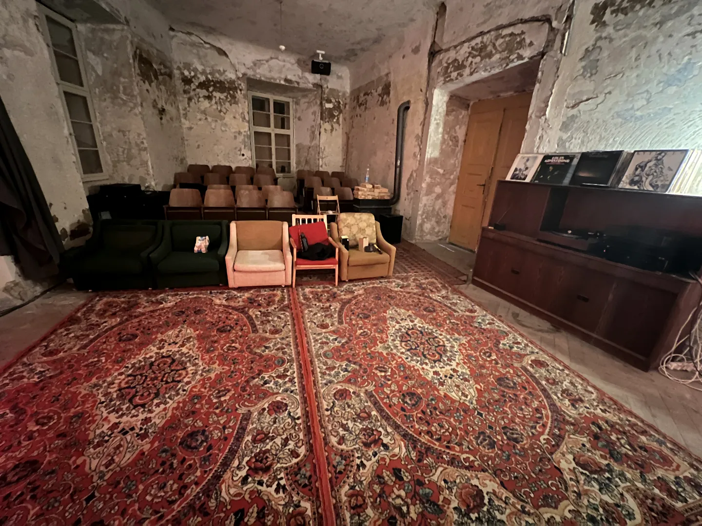
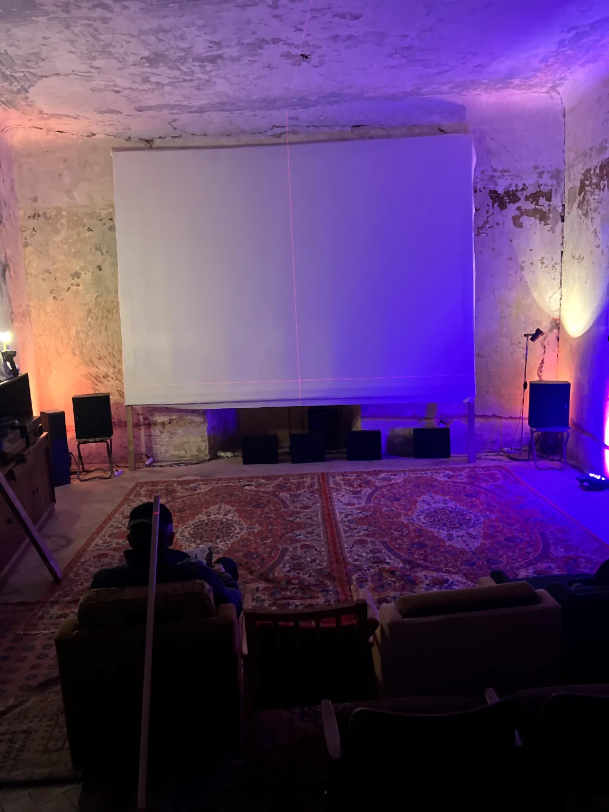
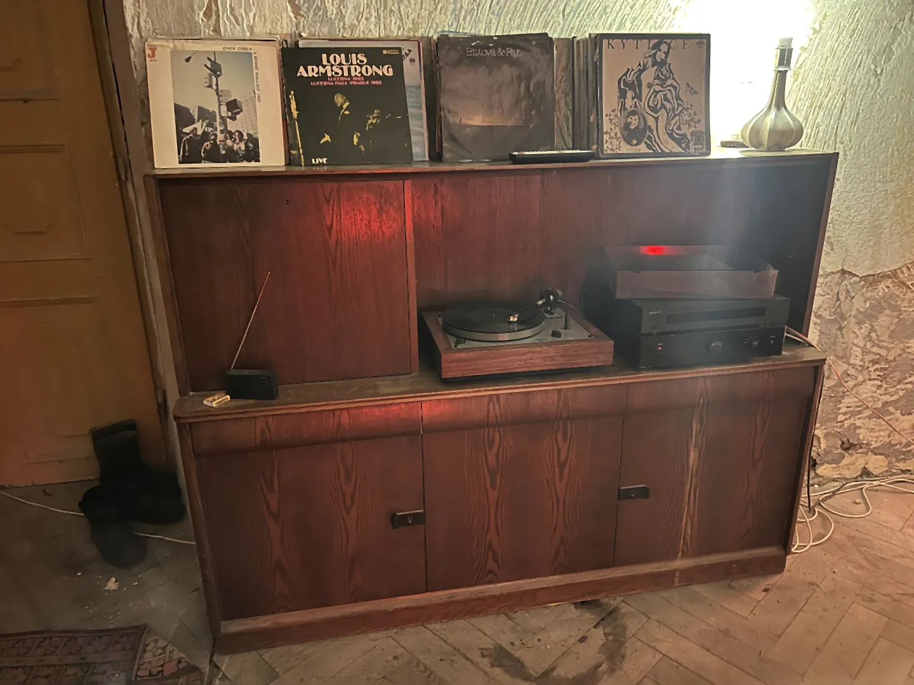
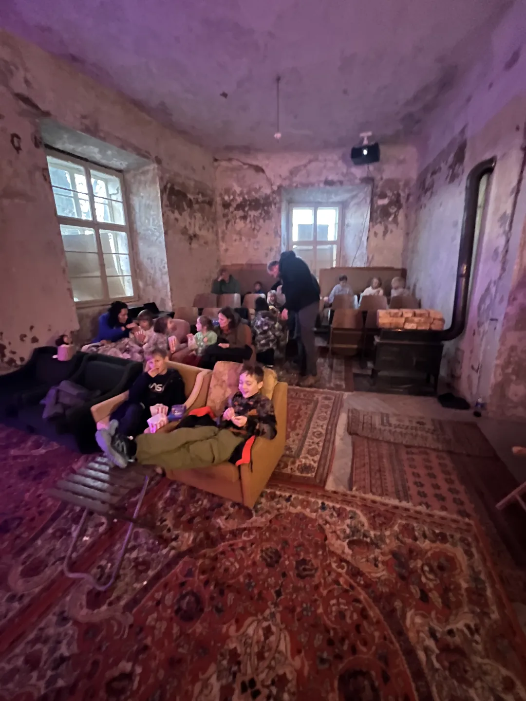

O kině
Filmy, hudba
a milý punk.
Malé klubové kino v ruině zámku v Chříči. Místo, kde se potkáváme u filmů, desek a společných zážitků. Na zámku promítáme už čtyři roky.

Čtyři roky
na zámku
Za kinem stojí Jakub Kováč — odtud KKKK, tedy Klubové kino Kuba Kováče, nebo prostě 4k. Zkušenosti se zvukem a kinem přenesl do malého zámeckého sálu. Vznikl neziskový projekt, který postupně roste spolu s lidmi, kteří do něj chodí.
Po letošní letní pauze jsme se vrátili 8. října filmem Přísahám, že za to nemůžu. Následovalo Pozvání a Zuřící býk. Co už u nás proběhlo, najdete i v archivu programu.
Máme rádi osobitost tohohle místa. Staré zdi, různá křesla a desky po ruce jsou součástí jeho atmosféry. Zázemí dál vylepšujeme, ale tenhle milý punk si chceme nechat.


Co se tu děje
Čtvrtky patří
filmům.
Promítáme každý čtvrtek ve 20:30. Střídáme současné filmy s návraty ke klasice. Vstupné je 100 Kč, a kdo chce kino podpořit víc, může dobrovolně přidat.
Program rozšiřujeme o dětská odpoledne s popcornem, dokumenty a setkání nad hudbou. Aktuální termíny najdete vždy v programu.
Co nás čeká



A co dál?
Chceme, aby se tu pravidelně potkávaly různé generace i různé chutě: u dětských projekcí, tematických filmových cyklů a přibližně jednou za měsíc také u sobotního dokumentu.
Další kapitolou bude Poslechovka — večery společného poslechu hudby. První chystáme na 5. prosince 2026 s Jakubovým výběrem oblíbených skladeb.
Postupně chceme vylepšovat zatemnění a zázemí sálu. A hlavně dál promítat, poslouchat a mít důvod se na zámku sejít.
Ozvěte se nám